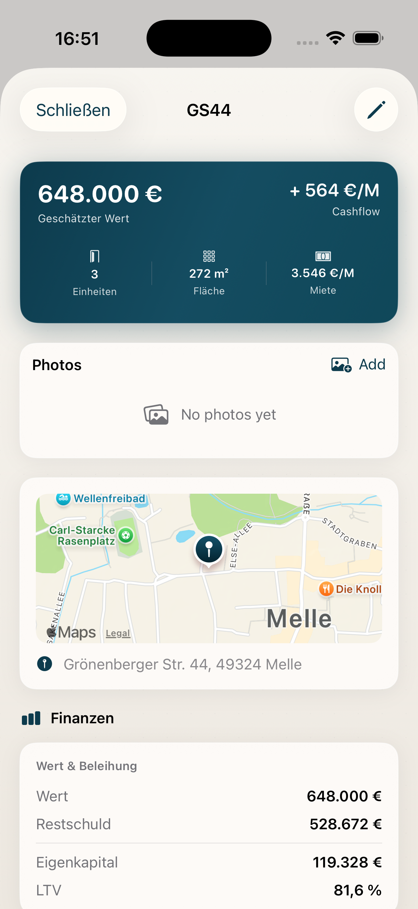

Ratgeber für Vermieter · Hauser
Als Vermieter sind Sie gesetzlich verpflichtet, Ihren Mietern jährlich eine Nebenkostenabrechnung zu erstellen. Wer die Frist verpasst, riskiert, dass Nachzahlungen nicht mehr eingefordert werden können. Hier erfahren Sie alles Wichtige zu Pflichten, Fristen und Inhalten.
Die Nebenkostenabrechnung – auch Betriebskostenabrechnung genannt – ist die jährliche Aufstellung der tatsächlich angefallenen Kosten, die der Mieter über die monatliche Nebenkostenvorauszahlung bereits beglichen hat. Sie zeigt dem Mieter transparent, wofür sein Geld verwendet wurde und ob eine Nachzahlung fällig wird oder ein Guthaben entsteht.
Rechtliche Grundlage ist § 259 BGB. Der Vermieter muss dem Mieter auf Verlangen Auskunft über die Höhe der umlagefähigen Kosten geben. In der Praxis ist die Abrechnung jedoch auch ohne ausdrückliche Aufforderung Pflicht, sofern im Mietvertrag eine Vorauszahlung vereinbart wurde.
Die Abrechnung bezieht sich auf das abgelaufene Kalenderjahr. Die entscheidende Frist: 12 Monate nach Ende des Abrechnungszeitraums. Für das Jahr 2024 bedeutet das konkret: Die Abrechnung muss dem Mieter bis spätestens 31. Dezember 2025 zugehen.
Wichtig: Es zählt der Zugang beim Mieter, nicht der Versand. Bei postalischer Zusendung sollten Sie also einen Puffer einplanen. Versäumen Sie die Frist, kann der Mieter die Nachzahlung verweigern – ein Guthaben muss er Ihnen jedoch weiterhin auszahlen.
Die Betriebskostenverordnung (§ 2 BetrKV) listet die umlagefähigen Kosten auf. Dazu gehören unter anderem:
Nicht umlagefähig sind hingegen Reparaturen, Instandhaltung, Rücklagen für größere Sanierungen oder Verwaltungskosten des Vermieters. Auch die Kosten für einen Hausmeister sind nur unter bestimmten Voraussetzungen umlagefähig.
Viele Kosten werden nach Wohnfläche umgelegt (z.B. Grundsteuer, Versicherung). Verbrauchsabhängige Kosten wie Wasser und Heizung werden in der Regel nach tatsächlichem Verbrauch abgerechnet – vorausgesetzt, es sind entsprechende Zähler installiert. Ohne Zähler muss nach Wohnfläche abgerechnet werden, was für den Vermieter oft ungünstiger ist.
Die Abrechnung muss übersichtlich und nachvollziehbar sein. Üblich ist eine Gliederung nach Kostenarten mit Gesamtkosten, Umlageschlüssel und dem auf die Wohnung entfallenden Anteil. Viele Vermieter nutzen Software oder lassen die Abrechnung von einem Dienstleister erstellen. Wichtig: Der Mieter muss die Abrechnung verstehen können.
Mit Hauser behalten Sie alle Mieter, Fristen und Abrechnungsdaten übersichtlich im Blick. Die App für Vermieter hilft Ihnen, Nebenkostenabrechnungen rechtzeitig zu planen und keine Frist zu verpassen. Ideal für Vermieter mit mehreren Objekten und vielen Mieteinheiten.
Hauser kostenlos entdecken
Hinweis: Dieser Artikel dient der allgemeinen Information. Für individuelle Rechtsfragen, insbesondere bei komplexen Abrechnungen oder Streitfällen, konsultieren Sie einen Anwalt oder Steuerberater.